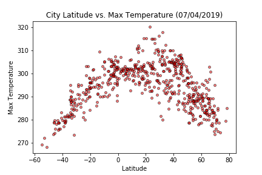

City Latitude vs Max Temperature

This web page analyzes how the temperature changes as you get closer to the
equator. We first pulled the data from the OpenWeatherMap API to assemble a dataset
for over 500 cities. After assembling the dataset, we used Matplotlib to plot
Temperature vs. Latitude of these cities.
We found that Cities, whose latitude are closer to the equator, have recorded the
maximum temperature. We derived the analysis that as latitude increases, the sun
shines more obliquely and provides less warming energy. The equator always faces
the sun directly, so the climate is warmer in cities closer to the equator.